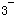

某成年男性病人，体重60kg，因频繁呕吐、腹泻而出现口渴、尿少、头晕、乏力而入院。BP12／8kPa(90／60mmHg)，P105次／min，神志淡漠，口唇干燥、樱线，眼窝凹陷，皮肤弹性差，呼吸深快，血清钠140mmol／L，血清钾3．4mmol／L，HCO14mmol／L，T波低平，U波。 关于该病人的护理评估是
显示答案
参考答案：E
题目解析：血钾＜3.5mmol/L为低钾血症，患者血钾为3.4mmol/L，故属于低钾血症；血钠正常范围为135~145mmol/L，该患者为140mmol/L，故血钠是正常的；但出现了口唇干燥、樱红，眼窝凹陷，皮肤弹性差等脱水的典型表现，为等渗性脱水。HCO3-的正常值为22～27mmol/L，患者的值明显低于正常范围，同时患者出现了呼吸的深快，结合临床表现，可判断为代谢性酸中毒。